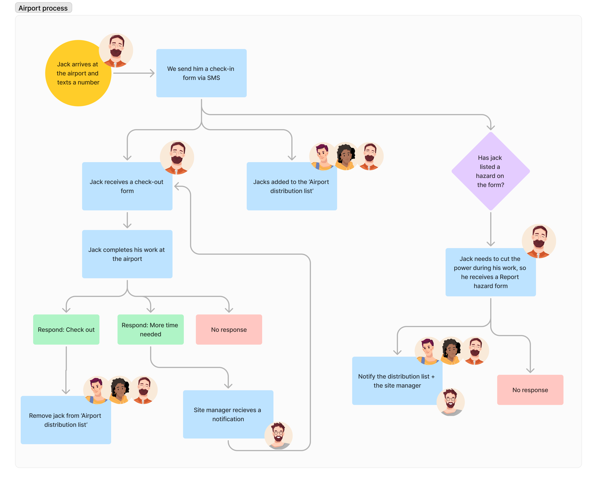

Whispir allows users to automate sms and email sending. Our team updated the existing interface to a drag and drop workflow builder.
Inital design concept
To achieve a cohesive design solution, we approached the initial research and discovery as a team of 3 designers, supported by a dedicated UX researcher, conducting initial research together and creating an initial set of high level concepts and visual treatments.
Initial customer interviews indicated that most users were intimidated by the existing interface. In fact, the majority of workflow setup was not being done by the customers themselves, but by Whispir's in-house support and enablement teams.
This feedback shaped our primary goal: create a self-service interface, suitable for our less technical customers. As the other designers moved to other features, I took over the workflow builder work full time. To provide context and focus, I documented eight of Whispir’s real-world use cases, complete with flow diagrams and personas and presented to the wider engineering team.
The team loved the idea of a visual builder, and I worked with the engineering team to identify what was possible with various libraries, creating several concept designs based on this discussion.
We took two of the ideas with the most promise and tested paper prototypes with customers and found that a 'click to add a step' approach (used by Messagebird, Activecampaign) performed significantly better than a 'drag to connect steps' approach (used by Twilio, Total.js flow)
Now that we’d aligned on a direction, I created a high-fidelity prototype.
We also adjusted some of the language for better clarity. For example, the original phrase "start your workflow" implied that users could pause or stop the workflow—a feature not yet available. I changed this to "trigger your workflow" to set more accurate expectations.

To manage development efficiently, the PM engineering manager and I ran a user journey mapping excercise to break the project into multiple iterations. We began with a simple but real use case: sending an emergency alert SMS to a predefined list when an online form is submitted.

In the lead up to the first release, we ran three more rounds of user testing, sharing both figma prototypes and real code.
Testing the live code turned out to be particularly useful, as we found several users struggling with the 'drag to scroll' navigation we'd implemented. By switching to a zoom function similar to Google Maps, we saw a noticeable improvement in later tests.
The experience was well recieved by users, but more importantly for the business, the new modern, easy to use UI helped build trust in the product with future investors, contributing to Whispir's successful IPO in 2019.